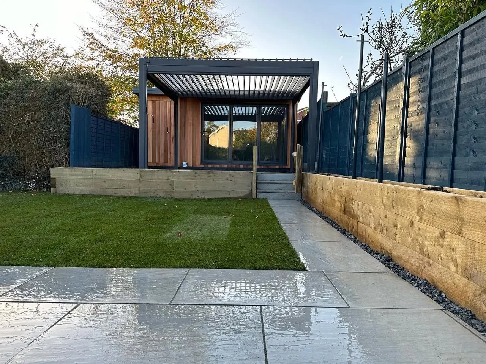
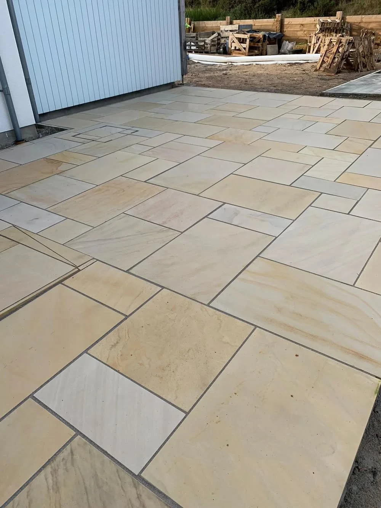

Patios & slabbing
Explore a patio that suits your garden, from natural stone and porcelain to gravel or resin finishes.
Explore this service →
WORCESTER · LANDSCAPING & PROPERTY SERVICES
Patios, driveways and landscaping that bring your outdoor space together. Discover Blackridge’s work and talk to us about your plans.
BLACKRIDGE LANDSCAPING
A welcoming driveway. A patio for summer evenings. Fencing that brings the garden together. Blackridge handles landscaping and property service enquiries in Worcester.
Explore our project photographs, choose the details you like and tell us about the space you want to create.
About Blackridge →
WHAT WE DO
Explore a patio that suits your garden, from natural stone and porcelain to gravel or resin finishes.
Explore this service →Discuss a driveway designed around your access, parking and preferred finish.
Explore this service →Bring privacy and structure to your garden with fencing that complements the space.
Explore this service →Connect paving, lawn and boundaries into a practical space for everyday outdoor living.
Explore this service →Complete your outdoor space with a lawn area planned alongside paths, borders and patios.
Explore this service →Discuss garden walling and the groundwork needed for your landscaping project.
Explore this service →THE FINISHING DETAILS
From the curve of a driveway to a neatly finished patio, explore the details in Blackridge’s project collection.
See our work →BLACKRIDGE PROJECTS
Tap any photograph to view the complete image.
WORCESTER
Send your postcode and a short description of the work to confirm coverage, discuss availability and arrange the next step.
Discuss your project →LET’S TALK ABOUT YOUR PROJECT
Tell Blackridge where you are, what you would like to change and how to reach you. Photos and approximate dimensions help us understand your plans.